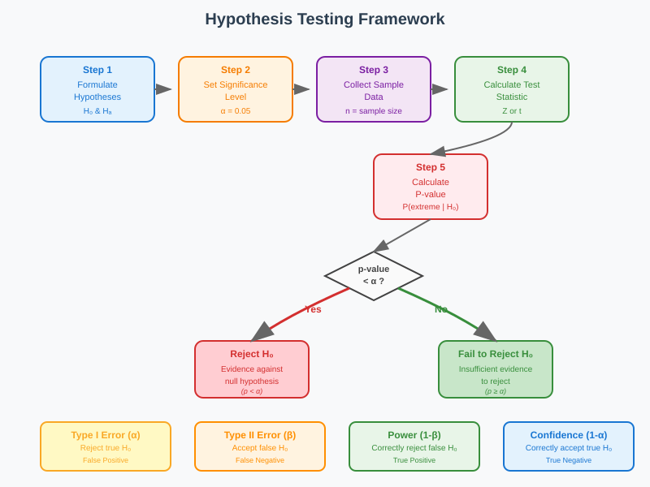
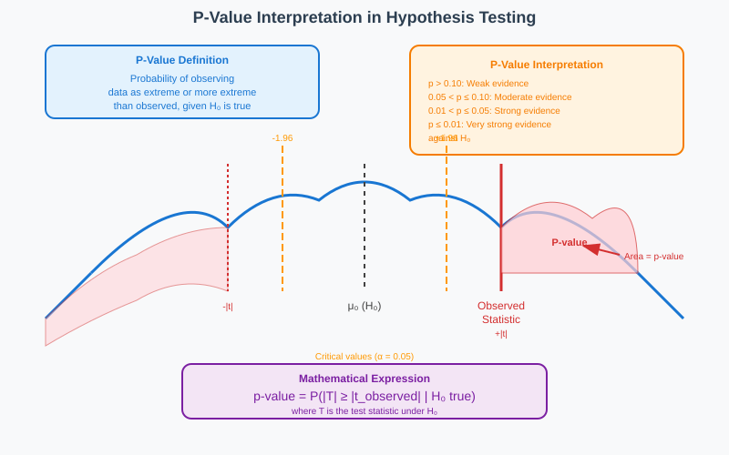
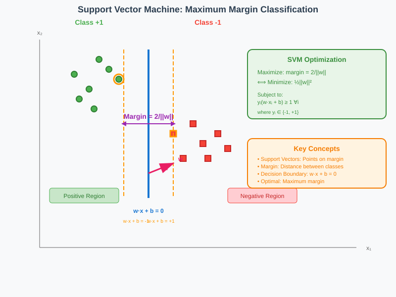
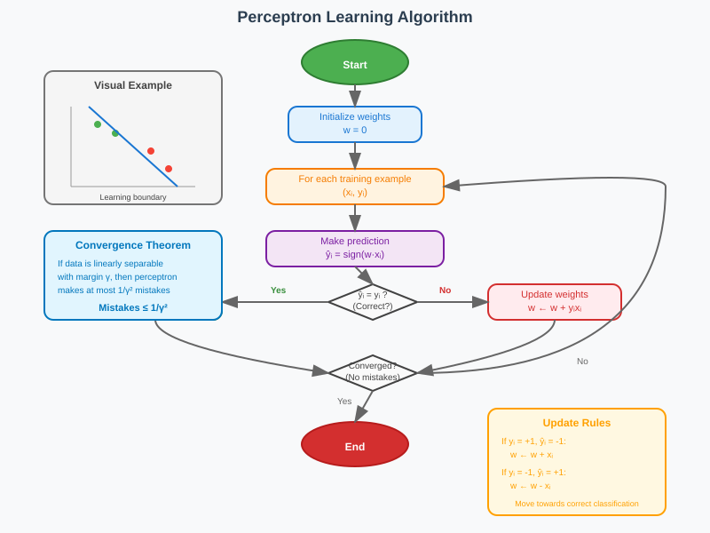
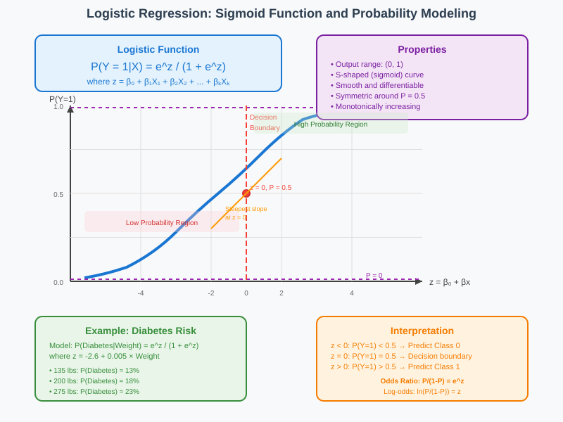

Statistical Methods and Machine Learning Classification
🧭 Quick Navigation
- Hypothesis Testing Fundamentals
- P-Values and Statistical Significance
- Confidence Intervals
- Classification Algorithms
- Logistic Regression
- Practical Applications
- References & Further Reading
📊 Hypothesis Testing Fundamentals
What is Hypothesis Testing?
Hypothesis testing is a statistical method used to make decisions about population parameters based on sample data. The core concept involves:
- Formulating hypotheses about unknown parameters
- Collecting sample data from the population
- Testing the validity of hypotheses using statistical methods

Key Components
Null Hypothesis (H₀)
The null hypothesis represents the default assumption or "status quo" that we test against. It typically states that there is no effect or no difference.
Alternative Hypothesis (Hₐ)
The alternative hypothesis represents what we want to prove or the research hypothesis.
Type I and Type II Errors
Type I Error (α): Rejecting a true null hypothesis
Type II Error (β): Accepting a false null hypothesis
Real-World Examples
Drug Effectiveness Testing
Consider a pharmaceutical company developing a new blood pressure medication:
- H₀: The drug has no meaningful effect on blood pressure
- Hₐ: The drug significantly reduces blood pressure
- Significance Level: α = 0.05 (5%)
Police Bias Investigation
A community organization claims police disproportionately stop people of color:
- H₀: Police stops follow national demographic patterns (35% rate)
- Hₐ: Police stops exceed national averages
- Data: Precinct A: 4,513 out of 12,567 stops were African-American (35.9%)
Statistical Decision Framework
The hypothesis testing process follows this systematic approach:
- Define hypotheses (H₀ and Hₐ)
- Choose significance level (α)
- Select appropriate test statistic
- Calculate p-value
- Make decision: Reject H₀ if p-value < α
📈 P-Values and Statistical Significance
Understanding P-Values
The p-value represents the probability of observing an outcome at least as extreme as the one observed, assuming the null hypothesis is true.

Key Properties of P-Values
- Range: 0 ≤ p-value ≤ 1
- Interpretation: Smaller p-values provide stronger evidence against H₀
- Threshold: Commonly α = 0.05 or α = 0.01
Mathematical Calculation
For a sample with mean x̄, the p-value calculation involves:
Z = (x̄ - μ) / (σ/√n)
Where:
- μ = hypothesized population mean
- σ = population standard deviation
- n = sample size
Practical Example: Manufacturing Quality Control
Consider testing device lifetime with: - Claimed mean: μ = 9.4 years - Sample size: n = 50 - Standard deviation: σ = 1.43 years - Observed mean: x̄ = 8.96 years
Calculation:
Z = (8.96 - 9.4) / (1.43/√50) = -2.175
Two-tailed p-value: 2 × P(Z ≤ -2.175) = 2 × 0.015 = 0.03 = 3%
Decision Rules
| P-value | Evidence against H₀ | Decision (α = 0.05) |
|---|---|---|
| > 0.10 | Weak | Accept H₀ |
| 0.05-0.10 | Moderate | Borderline |
| 0.01-0.05 | Strong | Reject H₀ |
| < 0.01 | Very Strong | Reject H₀ |
Binomial Distribution Example
For the police bias case (Precinct A):
P(X ≥ 4513 | n=12567, p=0.35) = 0.016 = 1.6%
Since 1.6% < 5%, we reject H₀ and conclude statistical evidence of bias exists.
🎯 Confidence Intervals
Definition and Interpretation
A confidence interval provides a range of plausible values for an unknown population parameter with a specified level of confidence.
Mathematical Framework
For a population mean with known standard deviation:
CI = x̄ ± z_(α/2) × (σ/√n)
Where z_(α/2) is the critical value from the standard normal distribution.
Construction Process
- Calculate sample statistics (x̄, n)
- Determine confidence level (typically 95% or 99%)
- Find critical value (z₀.₀₂₅ = 1.96 for 95% CI)
- Compute margin of error
- Construct interval
Practical Example
With sample data:
- x̄ = 4.7
- n = 40
- σ = 6.8
- Confidence level = 95%
Calculation:
Margin of error = 1.96 × (6.8/√40) = 2.1
CI = 4.7 ± 2.1 = [2.6, 6.8]
Interpretation: We are 95% confident that the true population mean lies between 2.6 and 6.8.
Key Properties
- Width depends on: Sample size, confidence level, population variability
- Trade-offs: Higher confidence → wider intervals
- Sample size effect: Larger n → narrower intervals
🤖 Classification Algorithms
Linear Classifiers Overview
Linear classifiers divide feature space using hyperplanes to separate different classes. The decision boundary is defined by:
w·x + b = 0
Where w is the weight vector and b is the bias term.

Perceptron Algorithm
The perceptron is a foundational linear classification algorithm with elegant theoretical properties.
Algorithm Description
# Perceptron Learning Algorithm
def perceptron(data, labels):
w = initialize_weights(zeros)
for epoch in range(max_epochs):
for x_i, y_i in zip(data, labels):
prediction = sign(w · x_i)
if prediction != y_i:
w = w + y_i * x_i
return w
Convergence Guarantee
Theorem: If data is linearly separable with margin γ, the perceptron makes at most 1/γ² mistakes.

Proof Sketch
The proof relies on two key insights:
- Progress bound: Each mistake increases w·w* by at least γ
- Length bound: ||w||² increases by at most 1 per mistake
Mathematical details:
After k mistakes:
- w·w* ≥ kγ (dot product grows)
- ||w||² ≤ k (length bounded)
- But also: w·w* ≤ ||w|| (Cauchy-Schwarz)
This leads to: k ≤ 1/γ²
Support Vector Machines (SVM)
SVMs extend linear classification by finding the maximum margin hyperplane.
Optimization Objective
minimize: ||w||²/2
subject to: y_i(w·x_i + b) ≥ 1 for all i
Margin Calculation
The margin between parallel hyperplanes is:
margin = 2/||w||
Key Advantages
- Optimal separation: Maximizes margin for better generalization
- Kernel trick: Can handle non-linear boundaries
- Sparse solution: Only support vectors matter
Geometric Interpretation
In 2D, the hyperplane is a line; in 3D, it's a plane. For higher dimensions:
- Decision boundary: (n-1)-dimensional hyperplane in n-dimensional space
- Margin: Distance between closest points of different classes
- Support vectors: Points that lie on the margin boundaries
📈 Logistic Regression
Mathematical Foundation
Logistic regression models the probability of binary outcomes using the logistic function:
P(Y = 1|X) = e^(β₀ + βX) / (1 + e^(β₀ + βX))

Why Logistic Function?
The logistic function has several desirable properties:
- Output range: (0, 1) - suitable for probabilities
- S-shaped curve: Smooth transition between extremes
- Mathematical tractability: Differentiable everywhere
Maximum Likelihood Estimation
Parameters β₀ and β are estimated by maximizing the likelihood function:
L(β₀, β) = ∏ᵢ [P(Yᵢ = 1|Xᵢ)]^Yᵢ [P(Yᵢ = 0|Xᵢ)]^(1-Yᵢ)
Taking the log-likelihood:
ℓ(β₀, β) = Σᵢ [Yᵢlog(pᵢ) + (1-Yᵢ)log(1-pᵢ)]
Practical Example: Diabetes Risk
Using body weight to predict diabetes risk:
Model: P(Diabetes|Weight = x) = e^(-2.6 + 0.005x) / (1 + e^(-2.6 + 0.005x))
Predictions: - 135 lbs: P(Diabetes) ≈ 13% - 275 lbs: P(Diabetes) ≈ 23%
Multiple Variables
Extension to multiple predictors:
P(Y = 1|X₁, X₂, ..., Xₖ) = e^(β₀ + β₁X₁ + β₂X₂ + ... + βₖXₖ) / (1 + e^(β₀ + β₁X₁ + β₂X₂ + ... + βₖXₖ))
Example with genetics:
P(Diabetes|Weight, Genetics) = e^(-2.7 + 0.0045×Weight + 0.2×Parents_with_diabetes) / (1 + e^(-2.7 + 0.0045×Weight + 0.2×Parents_with_diabetes))
Optimization Methods
The log-likelihood function is concave, enabling efficient optimization:
- Newton's Method: Second-order optimization
- Gradient Descent: First-order iterative method
- IRLS: Iteratively Reweighted Least Squares
🔬 Practical Applications
Case Study: Space Shuttle Challenger Disaster
The Challenger disaster illustrates the critical importance of proper statistical analysis in high-stakes decisions.
Background
- Date: January 28, 1986
- Issue: O-ring reliability at low temperatures
- Stakes: Human lives and mission success
Statistical Analysis
Engineers could have used logistic regression to model:
P(O-ring failure|Temperature) = e^(β₀ + β₁×Temperature) / (1 + e^(β₀ + β₁×Temperature))
Lessons Learned
- Data-driven decisions: Statistical evidence should guide critical choices
- Risk assessment: Quantify uncertainty in life-critical systems
- Communication: Present statistical findings clearly to decision-makers
Model Comparison Framework
| Method | Use Case | Advantages | Limitations |
|---|---|---|---|
| Hypothesis Testing | Scientific research | Rigorous framework | Binary decisions only |
| Confidence Intervals | Parameter estimation | Range of plausible values | Requires assumptions |
| Perceptron | Linear classification | Simple, guaranteed convergence | Linear separability required |
| SVM | Complex classification | Maximum margin, kernel trick | Computationally intensive |
| Logistic Regression | Probability estimation | Interpretable probabilities | Assumes linear relationship |
Best Practices
Statistical Analysis
- Check assumptions before applying methods
- Validate results using multiple approaches
- Consider practical significance beyond statistical significance
- Report confidence intervals along with point estimates
Machine Learning
- Feature engineering is crucial for performance
- Cross-validation prevents overfitting
- Ensemble methods often outperform single models
- Interpretability matters in high-stakes applications
🔗 References & Further Reading
📚 Core Textbooks
- "The Elements of Statistical Learning" by Hastie, Tibshirani, and Friedman - Comprehensive coverage of statistical learning methods
- "Pattern Recognition and Machine Learning" by Christopher Bishop - Excellent treatment of probabilistic approaches
- "Introduction to Statistical Learning" by James, Witten, Hastie, and Tibshirani - Accessible introduction with R examples
📝 Research Papers
- Vapnik & Chervonenkis (1971): "On the Uniform Convergence of Relative Frequencies of Events to Their Probabilities" - Foundation of statistical learning theory
- Rosenblatt (1958): "The Perceptron: A Probabilistic Model for Information Storage and Organization in the Brain" - Original perceptron paper
- Cortes & Vapnik (1995): "Support-Vector Networks" - Introduction of modern SVMs
🌐 Online Resources
- Stanford CS229 Machine Learning Course - Comprehensive lecture notes and problem sets
- MIT 18.05 Introduction to Probability and Statistics - Excellent foundation in statistical concepts
- Coursera Statistical Inference Course - Practical applications of hypothesis testing
🛠️ Software and Tools
- scikit-learn Documentation - Implementation details for classification algorithms
- R Documentation for Statistical Tests - Comprehensive coverage of hypothesis testing procedures
🎓 Interactive Learning
- Seeing Theory (Brown University) - Visual introduction to probability and statistics
- Distill.pub - Interactive explanations of machine learning concepts
This documentation provides a comprehensive overview of statistical hypothesis testing and machine learning classification methods. For hands-on implementation, explore the provided Colab notebooks and experiment with real datasets.